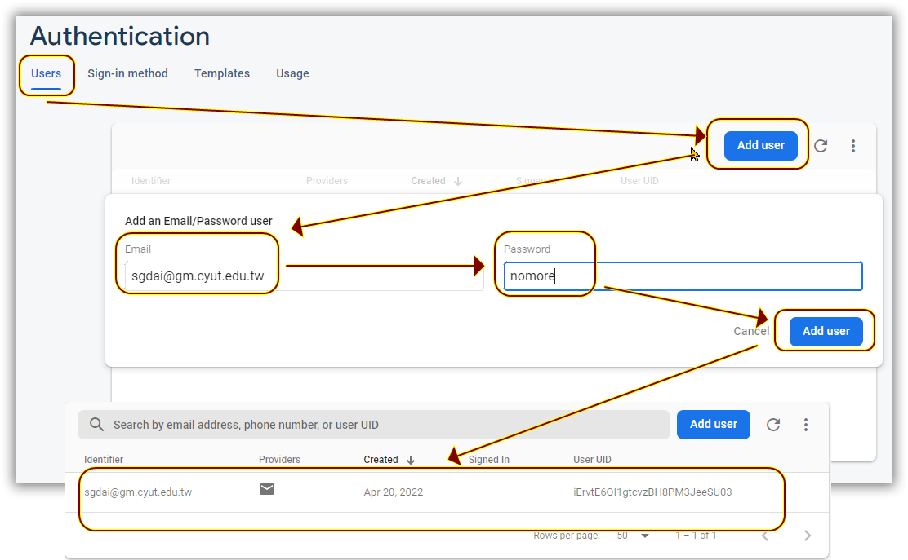

1. 甚麼是Firebase?
Firebase?
Google收購了Firebase這家公司，它主要是提供行動應用程式開發的平台服務，也就是BaaS(Backend as a Service)，
它能夠幫助我們快速開發我們的應用程式(包括包括Android、iOS以及Web平台)，幫我們整合大部分建立一個服務所需要的後台功能。
主要像是提供雲端給使用者架網頁、提供資料庫供使用者存取資料以及做後台分析等等。
例如假設要做一個美食PP，可以讓使用者可以查詢、分享各類美食餐廳資訊。我們會需要：
- 管理使用者的帳號
- 查詢、分享、按讚，發表評論等等的資料，我們需要一個地方儲存
- 當有人按讚或發表新的文章，我們要如何及時更新頁面和推播通知給使用者？
- 不會後端語言
- 不會關聯式資料庫
- 不會SQL語言查詢
- 不會建立一個Web Server
Firebase設定
- 進入Firebase網站 https://firebase.google.com/
- 點擊 Go to Console 進入主控台
語言建議使用English，中文不容易看懂
- 點擊Add project或create project
- 輸入project name
- 關閉《Enable Google analytics for this project》這個switch
這個是問你要不要分析你的後端，選擇不要分析，可以省下後面幾個步驟
- 進入專案主控台後，點選iOS+，來新增一個iOS平台
- 接下來5個步驟完成平台設定
- Register app
《Apple bundle ID》 隨便取一個 例如cyut.im.iosapp ，放到xcode專案中(如下圖)

《App nickname》 可以不用給
《App store ID》 沒上架不用給
最後點擊register app 來對firebase註冊這個iOS APP
這個的意義是用來串連你的app到這個firebase iOS 平台
app裡面加入了這個bundle ID之後
firease的SDK程式庫的程式可以藉由這個bundle ID ，來使用這個ios平台
- Download config file
點擊《Downlooad GoogleService-Info.plist》下載plist檔，
裡面是存取這個平台所需要的一些資料
下載後，拖曳到XCODE的專案內

- Add Firebase SDK
剛剛提過，app藉由firebase的SDK程式庫的程式來使用frebase平台功能，
所以必須在xcode加入firebase SDK，除了下面方法外也常有人使用cocoaPods
下面是加SDK的步驟
file/Add packages/搜尋列輸入
https://github.com/firebase/firebase-ios-sdk
- Add initialization code
在xcode專案中使用firebase要先做firebase初始化
import SwiftUI
import Firebase // ← 加入程式庫
@main
struct imaApp: App {
init(){
FirebaseApp.configure() // ← 在建構子中初始化firebase
}
var body: some Scene {
WindowGroup {
CH5V1()
}
}
}
- Next step
You're all set!
Make sure to check out the documentation to learn
how to get started with each Firebase product that you want to use in your app.
You can also explore sample Firebase apps.
點擊 《Continue to console》進入主控台
語言建議使用English，中文不容易看懂
這個是問你要不要分析你的後端，選擇不要分析，可以省下後面幾個步驟
- Register app 《Apple bundle ID》 隨便取一個 例如cyut.im.iosapp ，放到xcode專案中(如下圖)
- Download config file 點擊《Downlooad GoogleService-Info.plist》下載plist檔， 裡面是存取這個平台所需要的一些資料
- Add Firebase SDK 剛剛提過，app藉由firebase的SDK程式庫的程式來使用frebase平台功能，
- Add initialization code 在xcode專案中使用firebase要先做firebase初始化
- Next step
《App nickname》 可以不用給
《App store ID》 沒上架不用給
最後點擊register app 來對firebase註冊這個iOS APP
這個的意義是用來串連你的app到這個firebase iOS 平台
app裡面加入了這個bundle ID之後
firease的SDK程式庫的程式可以藉由這個bundle ID ，來使用這個ios平台
下載後，拖曳到XCODE的專案內
所以必須在xcode加入firebase SDK，除了下面方法外也常有人使用cocoaPods
下面是加SDK的步驟
file/Add packages/搜尋列輸入
2. Authentication(登入認證)
加入所需要的Firebase程式庫
參考上面說明加入firebaseAuth程式庫
Email addr./password認證
選擇Email/Password作為sign-in method

添加使用者
error是nil代表登入成功，大家可以試試看，使用非email的帳號，錯誤帳號，錯誤密碼
- 上面程式應該放那邊?
- 需要加上import Firebase嗎？
- 執行後，試試看，使用正確帳密、非email的帳號、錯誤帳號、錯誤密碼印出來的結果
- 應該怎麼修改才能夠完成真正登入到SystemView去
新增帳號
練習-將前一章節的一般資料庫的新增刪除修改替代成firebase的Authentication